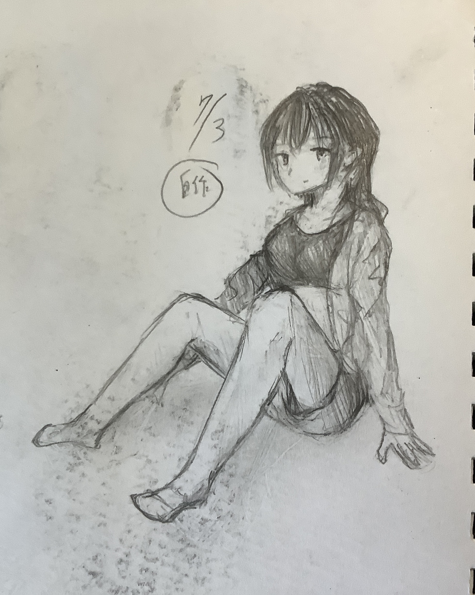
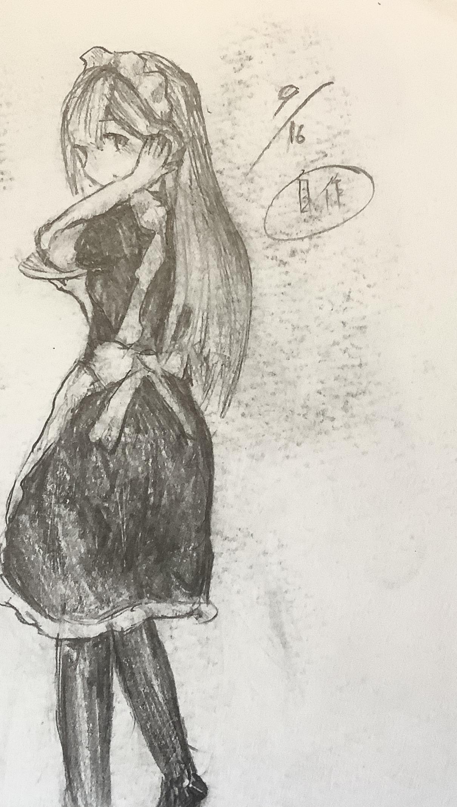
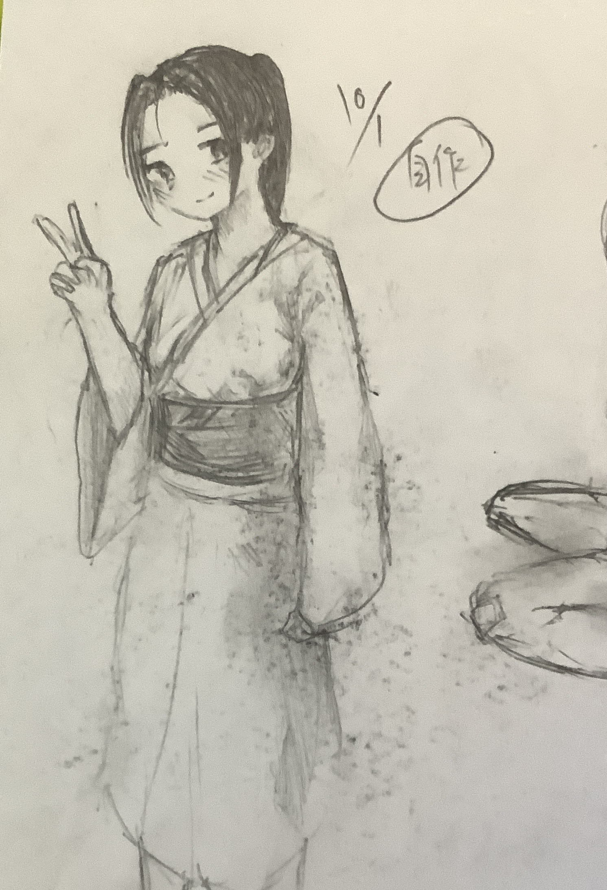
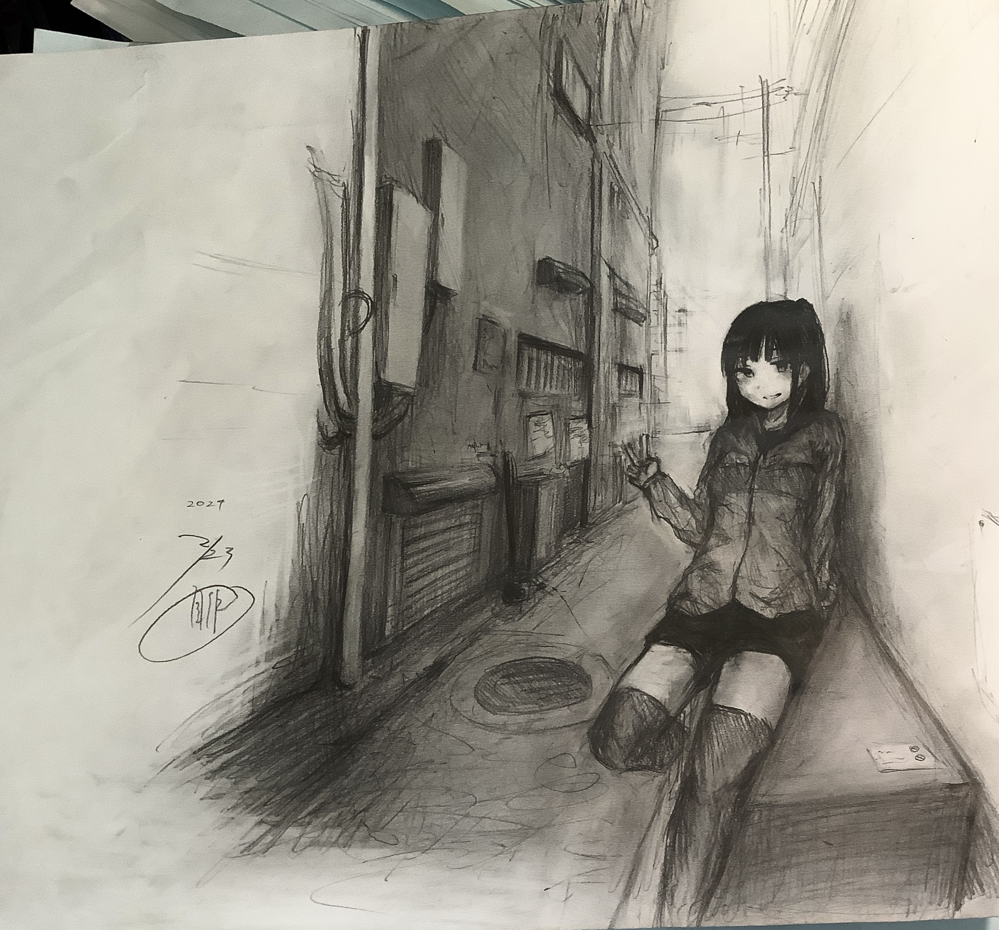
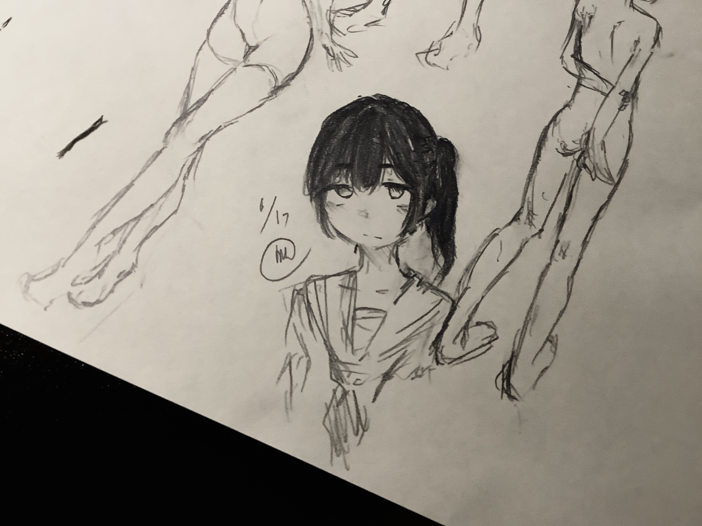
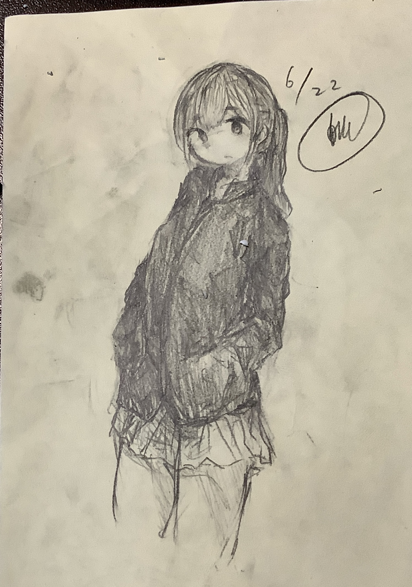

2024/6/22
以前デジタルイラストをかいているというご報告をしましたが、最近はモノクロのアナログ絵しか描いてません、
色塗りに苦手意識があるというのと、もっと体の構造を覚えたいというのがあるので、消したり変形したりが難しいアナログ絵でトレーニングしている感じです
人体を描き始めたのは2023/3/24からで、もう一年も経ったということで、いくつか自分の描いたアナログ絵をアーカイブとして残すことにします
//2023年7月3日
//2023年9月16日
//2023年10月1日
//2024年2月23日
//2024年6月17日
//2024年6月22日
前回も同じこと言ってるんですが、手の形をもっと練習したいです
また、もっといろんな構図を試していきたいです。